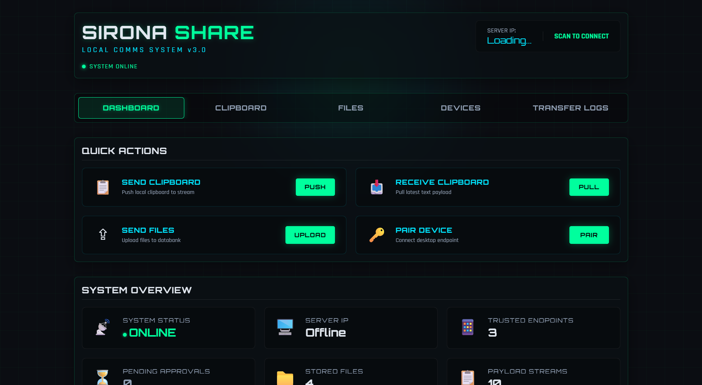
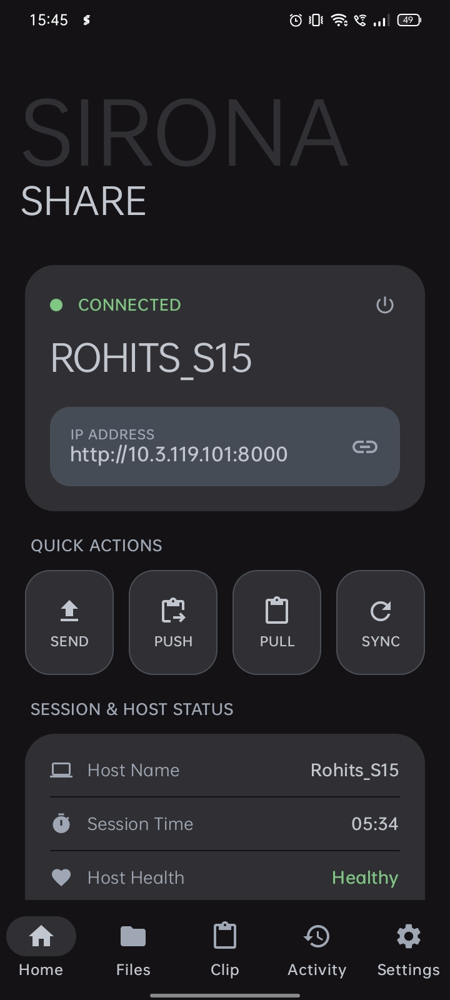
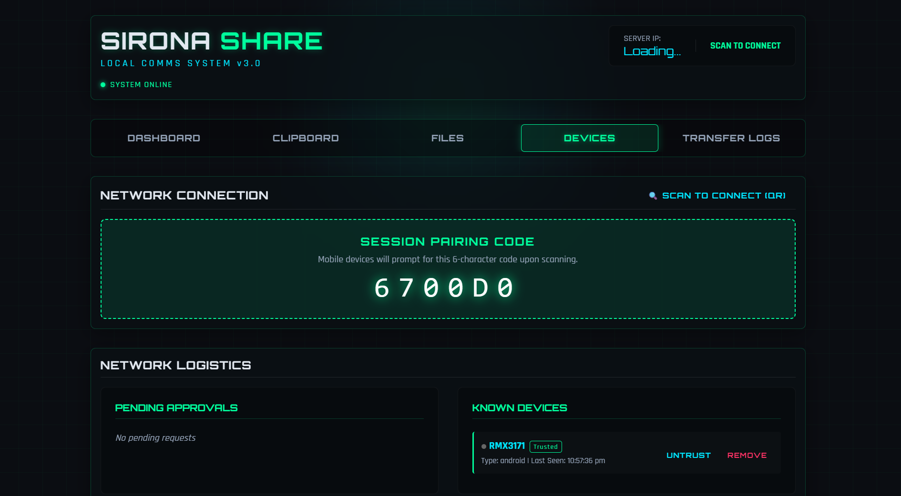
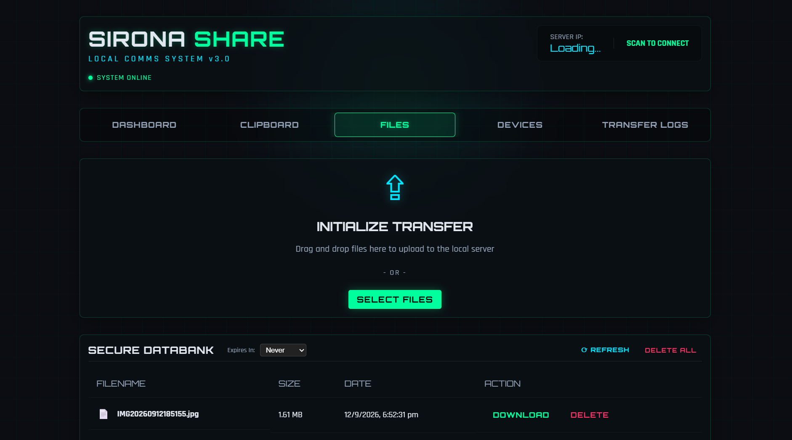
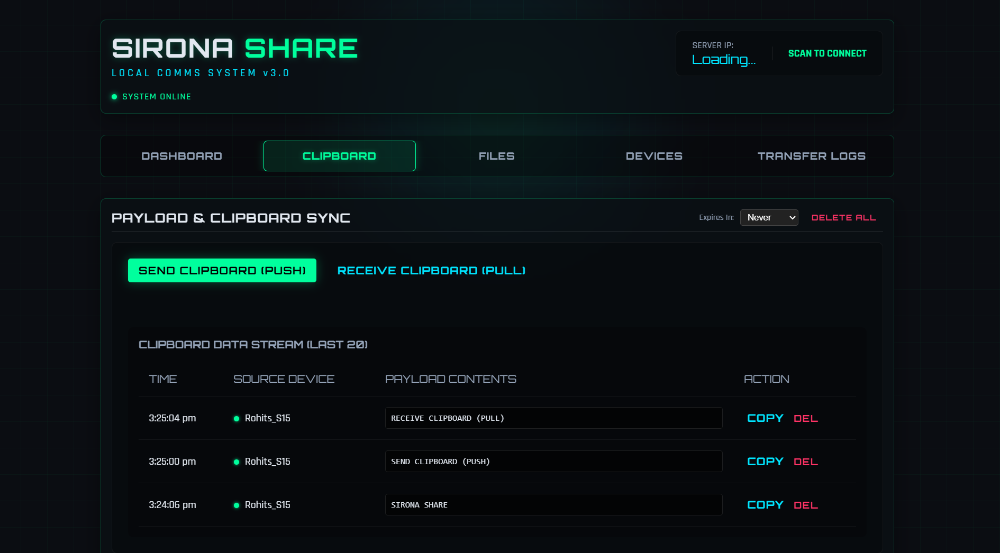
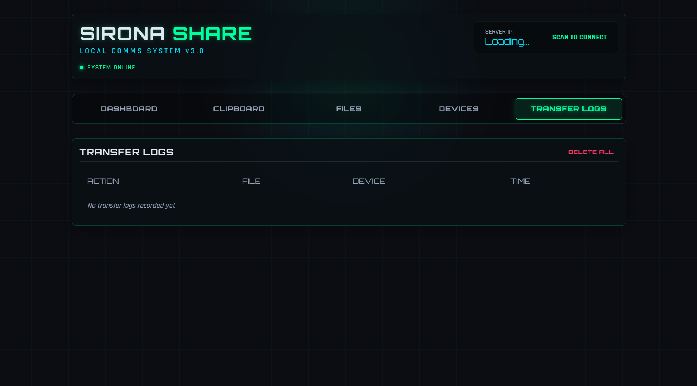

File transfer
Send documents, photos, and folders between devices on the same network.
Private local sharing
ONATIX Share lets you move documents, notes, links, and clipboard content between Windows and Android devices on the same Wi‑Fi or LAN.


Features
Built for fast, reliable transfers without cloud upload friction or complicated setup.
Send documents, photos, and folders between devices on the same network.
Move text between devices without uploading it to a third-party service.
Keep your files on your LAN instead of routing them through the cloud.
Install, discover nearby devices, and start sharing in seconds.
A closer look
From pairing your devices to sending a quick note, here’s what each part of ONATIX Share helps you do.
See your connection status, paired devices, and quick actions together. Start a file transfer or clipboard send without hunting through menus.

Use the pairing code to connect your phone, then review known devices and manage which ones you trust.

Choose files to send over your local connection, then see what’s available in your file list—all in one place.

Push text from one device or pull the latest clipboard content from another. Recent items stay visible in the activity stream.

Check the transfer log to see file activity, the device involved, and when it happened—so you can quickly retrace a recent send.
Check your connection, reach the address for your paired device, and jump straight into sending files or sharing clipboard text from Android.
How it works
Place your devices on the same Wi‑Fi or LAN and let them discover each other.
Choose the target device and pick the file, link, or text you want to send.
Send the data directly over your local network without ever leaving your home setup.
Fast desktop transfers for laptops and workstations.
Quick handheld sharing for photos, notes, and clipboard content.
Everything stays on your own Wi‑Fi or LAN for privacy and speed.
FAQ
No. ONATIX Share is designed for direct communication over the same local network.
No. The app is built for direct, local use without sign-up or cloud identity setup.
Files, text, clipboard content, and links are all supported across compatible devices.
Yes. Transfers stay on your local network rather than being routed through a public server.
Ready to try it?